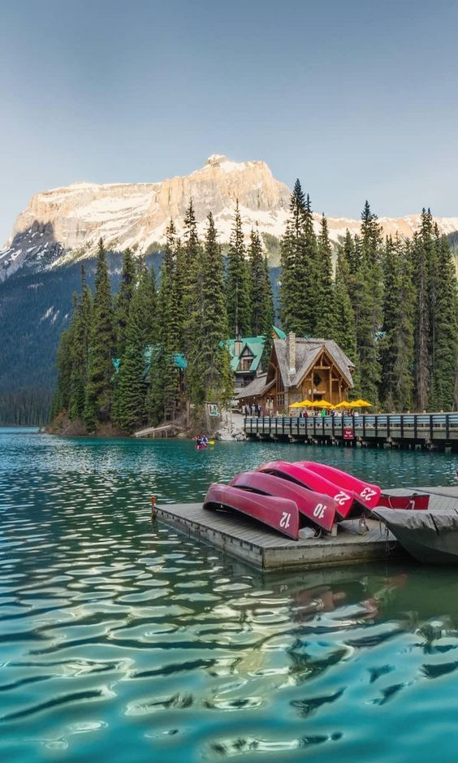
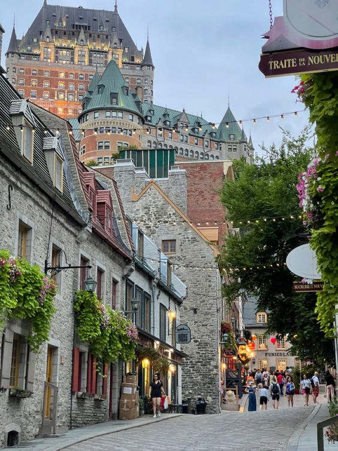
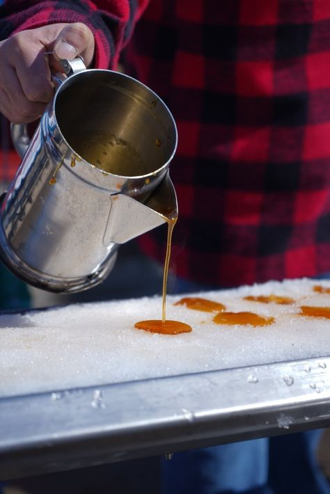

DISCOVER CANADA
Come to explore the country of your dream
Sarah Durand, your guide will help you plan your perfect holiday trip

KAYAK ACTIVITY ON THE MIDDLE OF THE MOUNTAIN
Embark on a thrilling kayaking adventure amidst the breathtaking mountain landscapes of Quebec. Paddle through pristine waters, surrounded by towering peaks, and immerse yourself in the serenity of nature. A unique and exhilarating experience awaits as you navigate your kayak through the heart of the Quebec mountains, creating memories that will last a lifetime.

WALK AROUND THE OLD QUEBEC CITY
Step back in time and wander through the charming streets of Old Quebec City. Immerse yourself in the rich history and architecture as you stroll along cobblestone pathways. Discover hidden gems, quaint shops, and iconic landmarks that transport you to a bygone era. With every step, Old Quebec unveils its tales, making it a delightful journey through the enchanting past of this historic city.

MAKE MAPLE SYRUP LOLLY POP ON THE SNOW
Indulge in a sweet and delightful experience as you craft your own Maple syrup lolly pops amidst a pristine snowy landscape. Engage in this hands-on activity, where the crisp winter air enhances the magic of creating these delicious treats. Feel the joy of making Maple syrup lolly pops under the glistening snowflakes, turning a winter day into a memorable and tasty adventure in the heart of Canada.
FIND OUT MORE
Check out the National canadian website
Click here